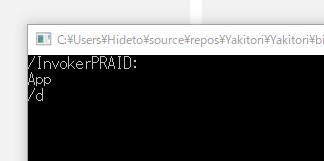

UWP：FullTrustProcessLauncher で起動したプログラムに引数を渡す
公開日：
できないのかなーと思ってたのだけど、イケるっぽい。
こんな風に desktop:ParameterGroup をあらかじめ登録して……
<?xml version="1.0" encoding="utf-8"?> <Package …… xmlns:desktop="http://schemas.microsoft.com/appx/manifest/desktop/windows10" > <Applications> <Application Id="App" Executable="$targetnametoken$.exe" EntryPoint="$targetentrypoint$"> <Extensions> <desktop:Extension Category="windows.fullTrustProcess" Executable="Yakitori.Console\Yakitori.Console.exe"> <desktop:FullTrustProcess> <desktop:ParameterGroup GroupId="Desktop" Parameters="/d"/> <desktop:ParameterGroup GroupId="Active" Parameters="/a"/> </desktop:FullTrustProcess> </desktop:Extension> </Extensions> </Application> </Applications> </Package>
それを使えばいいみたい。
private async void Button_Click(object sender, Windows.UI.Xaml.RoutedEventArgs e) { await FullTrustProcessLauncher.LaunchFullTrustProcessForCurrentAppAsync("Desktop"); }
これをコンソールアプリで受けてみると、こんな感じになった。
namespace Yakitori.Console { class Program { static void Main(string[] args) { foreach (var arg in args) { System.Console.WriteLine(arg); }System.Console.ReadKey(); } } }
意味はよく分からんし、本来の使い方と違う気がするけど、これで UWP ⇔ コンソール連携できそう。
